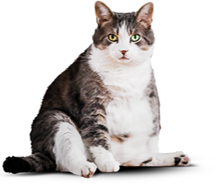
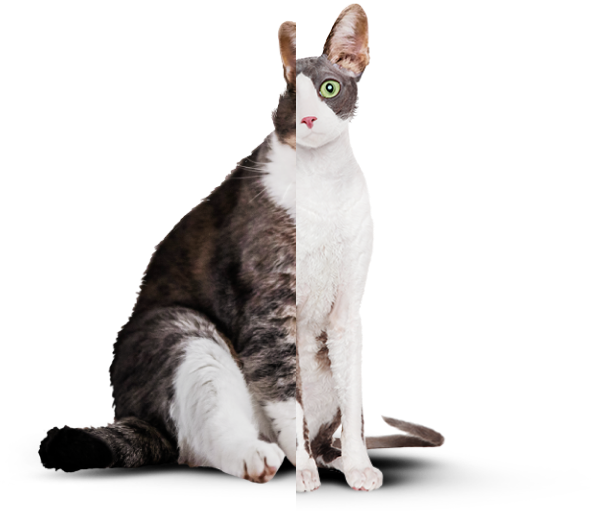

{% set pageId = 0 %}
{% set permalink = pages[pageId].path %}

<!DOCTYPE html>
<html class="page" lang="ru">
{% include "./templates/head.twig" %}

<body class="page__body page__body--index">
  {% include "./templates/header.twig" %}

  <main class="main-content">
    <div class="page__centerer">
      <section class="main-content__promo promo">
        <div class="promo__wrapper">
          <h1 class="promo__title">Функциональное питание для котов</h1>
          <h3 class="promo__description">Занялся собой? Займись котом!</h3>
        </div>
        <picture>
          <source type="image/avif" media="(min-width: 1280px)" srcset="
          img/food-box--desktop@1x.avif 1x,
          img/food-box--desktop@2x.avif 2x">
          <source type="image/avif" media="(min-width: 768px)" srcset="
          img/food-box--tablet@1x.avif 1x,
          img/food-box--tablet@2x.avif 2x">
          <source type="image/avif" srcset="
          img/food-box--mobile@1x.avif 1x,
          img/food-box--mobile@2x.avif 2x">

          <source type="image/webp" media="(min-width: 1280px)" srcset="
          img/food-box--desktop@1x.webp 1x,
          img/food-box--desktop@2x.webp 2x">
          <source type="image/webp" media="(min-width: 768px)" srcset="
          img/food-box--tablet@1x.webp 1x,
          img/food-box--tablet@2x.webp 2x">
          <source type="image/webp" srcset="
          img/food-box--mobile@1x.webp 1x,
          img/food-box--mobile@2x.webp 2x">

          <source media="(min-width: 1280px)" srcset="
          img/food-box--desktop@1x.png 1x,
          img/food-box--desktop@2x.png 2x">
          <source media="(min-width: 768px)" srcset="
          img/food-box--tablet@1x.png 1x,
          img/food-box--tablet@2x.png 2x">
          
        </picture>
        <a class="promo__button button" href="form.html">Подобрать программу</a>
      </section>
      <section class="main-content__selection selection">
        <div class="selection__wrapper">
          <h2 class="selection__title selection__title--slim">Похудение</h2>
          <p class="selection__description">Ваш кот весит больше собаки и почти утратил способность лазить по
            деревьям?
            Пора на диету! Cat Energy Slim поможет вашему питомцу сбросить лишний вес.</p>
          <a class="selection__link" href="catalog.html">Каталог slim</a>
        </div>
        <div class="selection__wrapper">
          <h2 class="selection__title selection__title--pro">Набор массы</h2>
          <p class="selection__description">Заработать авторитет среди дворовых котов и даже собак? Серия Cat
            Energy Pro
            поможет вашему коту нарастить необходимые мышцы!</p>
          <a class="selection__link" href="catalog.html">Каталог pro</a>
        </div>
      </section>
      <section class="main-content__advantages advantages">
        <h2 class="advantages__title">Как это работает</h2>
        <ul class="advantages__list">
          <li class="advantages__item advantages__item--leaf">
            <p class="advantages__description">Функциональное питание содержит только
              полезные питательные вещества.</p>
          </li>
          <li class="advantages__item advantages__item--cup">
            <p class="advantages__description">Выпускается в виде порошка, который нужно
              лишь залить кипятком и готово.
            </p>
          </li>
          <li class="advantages__item advantages__item--eat">
            <p class="advantages__description ">Замените один-два приема обычной еды на наше
              функциональное питание.</p>
          </li>
          <li class="advantages__item advantages__item--time">
            <p class="advantages__description">Уже через месяц наслаждайтесь изменениями к
              лучшему вашего&nbsp;питомца!
            </p>
          </li>
        </ul>
      </section>
    </div>
    <section class="main-content__example example">
      <div class="page__centerer">
        <h2 class="example__title">Живой пример</h2>
      </div>
      <div class="example__wrapper">
        <div class="page__centerer">
          <div class="example__container">
            <p class="example__description">Борис сбросил 5 кг за 2 месяца, просто заменив свой обычный корм на Cat
              Energy
              Slim. Отличный результат без
              изнуряющих тренировок! При этом он не менял своих привычек и по-прежнему спит по 16 часов в
              день.</p>
            <dl class="example__statistic statistic">
              <div class="statistic__item statistic__item--weight">
                <dt class="statistic__key">снижение веса</dt>
                <dd class="statistic__value">5 кг</dd>
              </div>
              <div class="statistic__item statistic__item--time">
                <dt class="statistic__key">затрачено времени</dt>
                <dd class="statistic__value">60 дней</dd>
              </div>
              <div class="statistic__item statistic__item--spending">
                <dt class="statistic__key">Затраты на питание:</dt>
                <dd class="statistic__value">15 000 РУБ.</dd>
              </div>
            </dl>
            <div class=" example__curtain curtain">
              <picture>
                <source type="image/avif" srcset="
                img/cat-before--mobile@1x.avif 1x,
                img/cat-before--mobile@2x.avif 2x">
                <source type="image/webp" srcset="
                img/cat-before--mobile@1x.webp 1x,
                img/cat-before--mobile@2x.webp 2x">
                
              </picture>
              <picture>
                <source type="image/avif" media="(min-width: 1280px)" srcset="
                img/cats-before-after@1x.avif 1x,
                img/cats-before-after@2x.avif 2x">
                <source type="image/avif" media="(min-width: 768px)" srcset="
                img/cats-before-after@1x.avif 1x,
                img/cats-before-after@2x.avif 2x">

                <source type="image/webp" media="(min-width: 1280px)" srcset="
                img/cats-before-after@1x.webp 1x,
                img/cats-before-after@2x.webp 2x">
                <source type="image/webp" media="(min-width: 768px)" srcset="
                img/cats-before-after@1x.webp 1x,
                img/cats-before-after@2x.webp 2x">

                <source media="(min-width: 1280px)" srcset="
                img/cats-before-after@1x.png 1x,
                img/cats-before-after@2x.png 2x">
                <source media="(min-width: 768px)" srcset="
                img/cats-before-after@1x.png 1x,
                img/cats-before-after@2x.png 2x">
                
              </picture>
              <div class="curtain__range range">
                <button class="range__description" type="button">Было</button>
                <div class="range__scale">
                  <div class="range__thumb">
                  </div>
                </div>
                <button class="range__description" type="button">Стало</button>
              </div>
            </div>
          </div>
        </div>
      </div>
    </section>
  </main>
  {% include "./templates/aside.twig" %}

  {% include "./templates/footer.twig" %}
</body>

</html>
